This folder holds 43 screenshots captured from a "Predicted 2026" slide deck covering Q2 2026 (April–June) activity across the prediction-market industry: volume and open interest, category mix, the World Cup, fees, funding, incumbent moves (Robinhood/Rothera, Coinbase, Big Tech, iGaming), and the regulatory fight between the CFTC and the states. Files are numbered 01–43 in the deck's original order and renamed to describe their content. This page is a plain local reference — open it directly in a browser from this folder.
Source: screenshots of the "Predicted 2026" Q2 report, captured 2026-08-24. Sourcing within slides cites Artemis, DefiLlama, RootData, Dune (@ommiii), Apptopia, CFTC filings, and press reports as noted per-slide.
Headline Q2 2026 stats: $111B quarterly notional volume, +1,764% YoY, $52.7B in June alone (the quarter's biggest month), 1.7x Q2 2025's volume, and $1.288B in funding raised. Source: Artemis.
01-q2-by-the-numbers.png
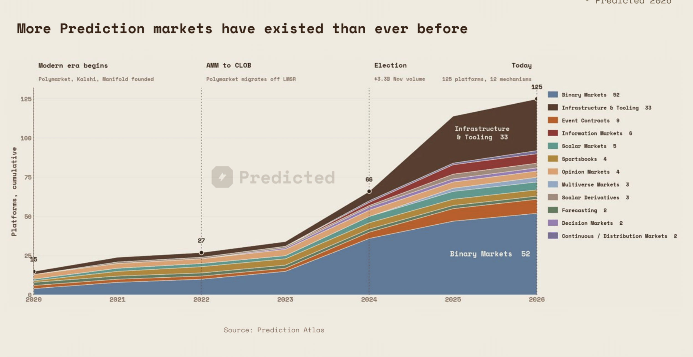
02More Prediction markets have existed than ever before
Cumulative count of prediction-market platforms 2020–2026, from 15 to 125, annotated with milestones (Polymarket/Kalshi/Manifold founding, Polymarket's AMM-to-CLOB migration, the 2024 election). Binary markets (52) and infrastructure/tooling (33) dominate the mix of 12 mechanism types. Source: Prediction Atlas.
02-cumulative-platform-growth.png
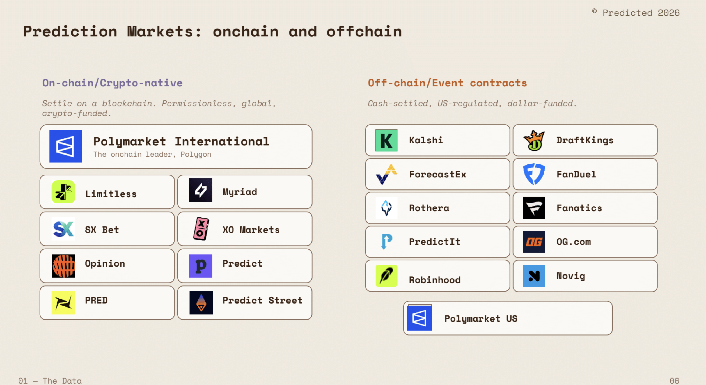
03Prediction Markets: onchain and offchain
Directory of platforms split into on-chain/crypto-native (Polymarket International, Limitless, Myriad, SX Bet, XO Markets, Opinion, Predict, PRED, Predict Street) versus off-chain/event-contract venues (Kalshi, ForecastEx, Rothera, DraftKings, FanDuel, Fanatics, PredictIt, OG.com, Robinhood, Novig, Polymarket US).
03-onchain-vs-offchain-platforms.png
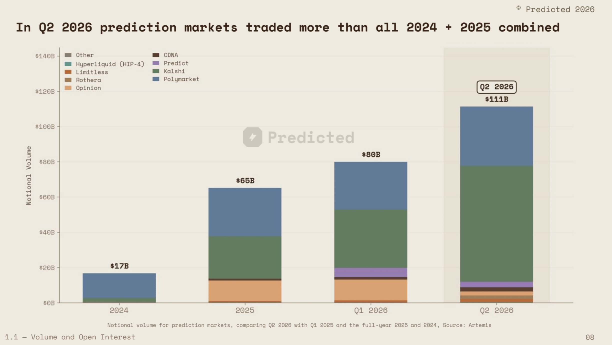
04In Q2 2026 prediction markets traded more than all 2024 + 2025 combined
Daily open interest area chart, Jan 2025–Jul 2026, showing Kalshi reaching $1.2B and Polymarket $569M by Q2 2026, both all-time highs. Source: Artemis.
05-open-interest-all-time-high.png
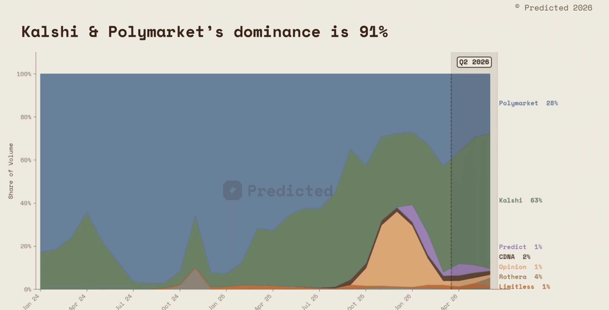
06Kalshi & Polymarket's dominance is 91%
Share-of-volume area chart, Jan 2024–Q2 2026: Kalshi and Polymarket together hold 91% of volume in Q2 2026 (63% / 28%), with Predict, CDNA, Opinion, Rothera and Limitless splitting the rest.
06-kalshi-polymarket-market-share.png
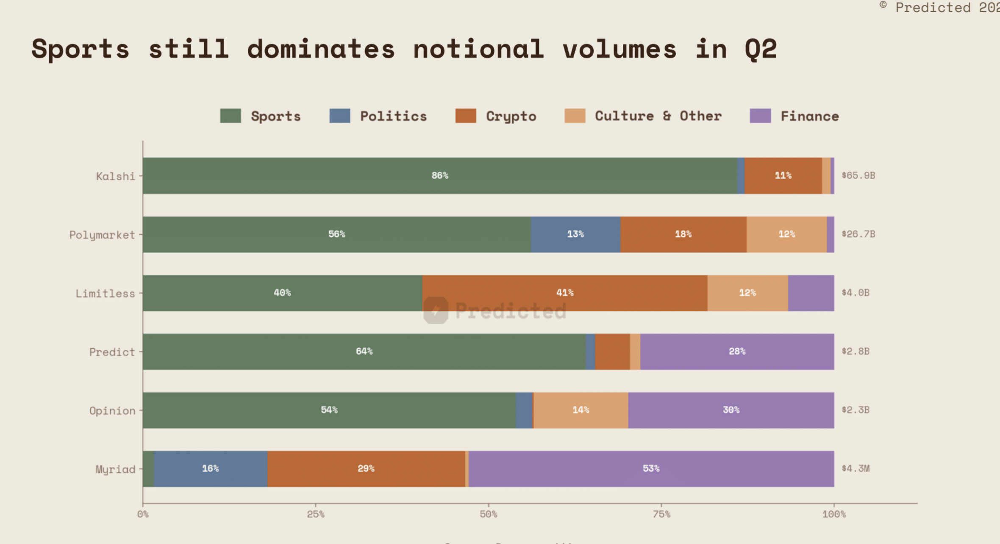
07Sports still dominates notional volumes in Q2
Stacked bar of Q2 volume by category (Sports/Politics/Crypto/Culture & Other/Finance) for Kalshi ($65.9B, 86% sports), Polymarket ($26.7B, 56% sports), Limitless, Predict, Opinion and Myriad.
07-category-breakdown-by-platform.png
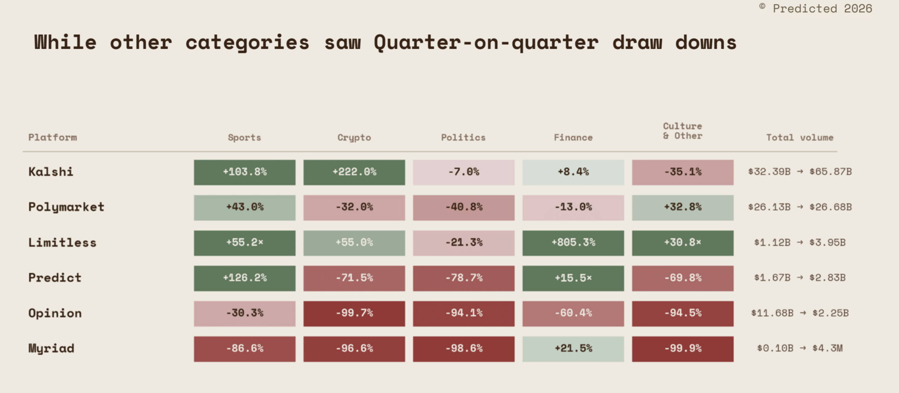
08While other categories saw Quarter-on-quarter draw downs
QoQ % change table by platform and category. Kalshi grew across sports (+104%) and crypto (+222%); Opinion and Myriad saw steep declines (crypto/politics/culture down 90%+) as their Q1 spikes faded.
08-category-qoq-change-table.png
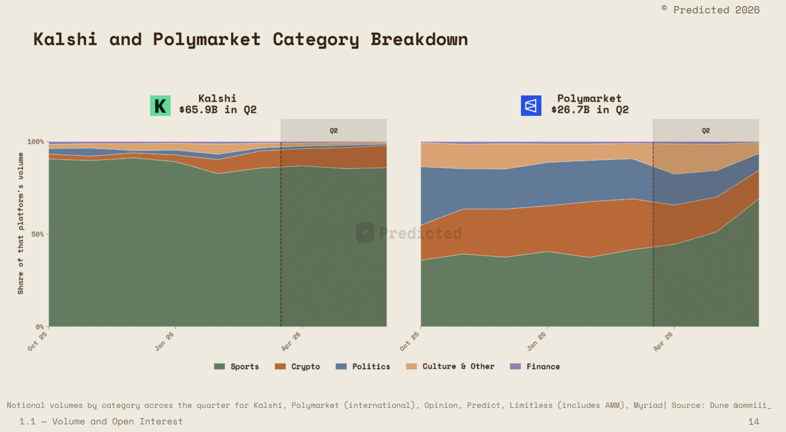
09Kalshi and Polymarket Category Breakdown
Category share of each platform's own volume over time (Oct 2025–Q2 2026): Kalshi stays ~85-90% sports throughout; Polymarket's sports share rose through Q2 as crypto and politics receded. Source: Dune @ommiii.
09-kalshi-polymarket-category-trend.png
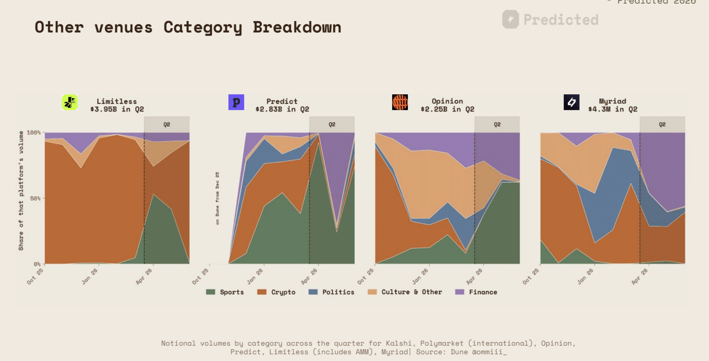
10Other venues Category Breakdown
Same category-share view for Limitless ($3.95B), Predict ($2.83B), Opinion ($2.25B) and Myriad ($4.3M) — each with a distinct mix shift into Q2, notably Opinion and Predict rotating toward finance.
10-other-venues-category-trend.png
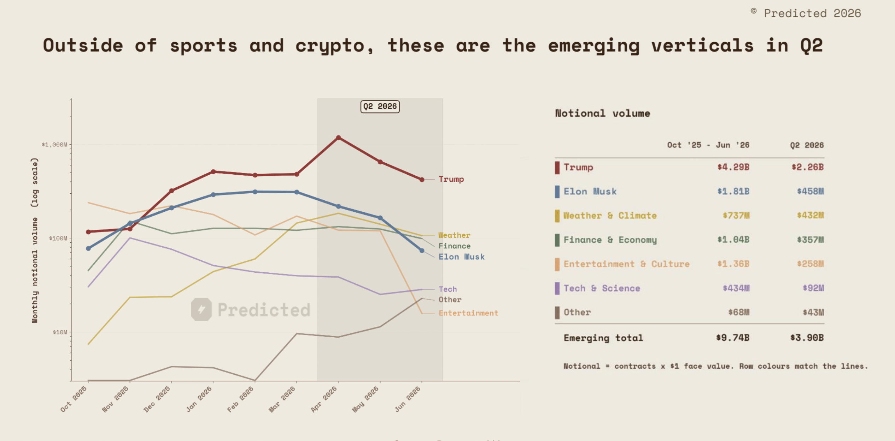
11Outside of sports and crypto, these are the emerging verticals in Q2
Monthly notional volume (log scale) for Trump, Elon Musk, Weather, Finance, Tech and Entertainment markets, Oct 2025–Jun 2026, with a table of Q2 totals — Trump markets alone did $2.26B in Q2.
11-emerging-verticals-outside-sports-crypto.png
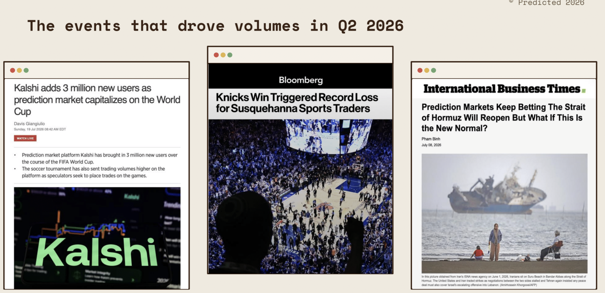
12The events that drove volumes in Q2 2026
Three news clippings: Kalshi added 3M users during the FIFA World Cup; a Knicks win triggered a record loss for Susquehanna's sports-trading desk; prediction markets kept betting on Strait of Hormuz reopening.
12-events-that-drove-q2-volume.png
13–16 · The World Cup
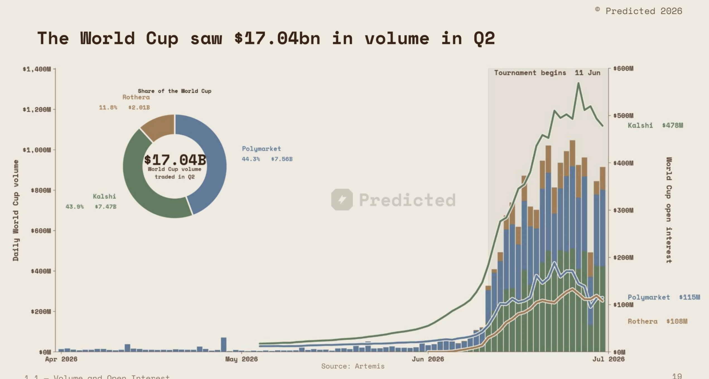
13The World Cup saw $17.04bn in volume in Q2
Daily World Cup betting volume ramping from kickoff (11 June); $17.04B total split almost evenly between Polymarket (44.3%), Kalshi (43.9%) and Rothera (11.8%). Source: Artemis.
13-world-cup-volume-17bn.png
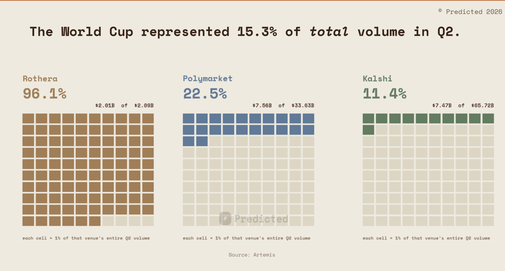
14The World Cup represented 15.3% of total volume in Q2
Waffle charts showing how concentrated the World Cup was for each venue: 96.1% of Rothera's entire Q2 volume was World Cup contracts, versus 22.5% for Polymarket and 11.4% for Kalshi.
14-world-cup-share-of-total-volume.png
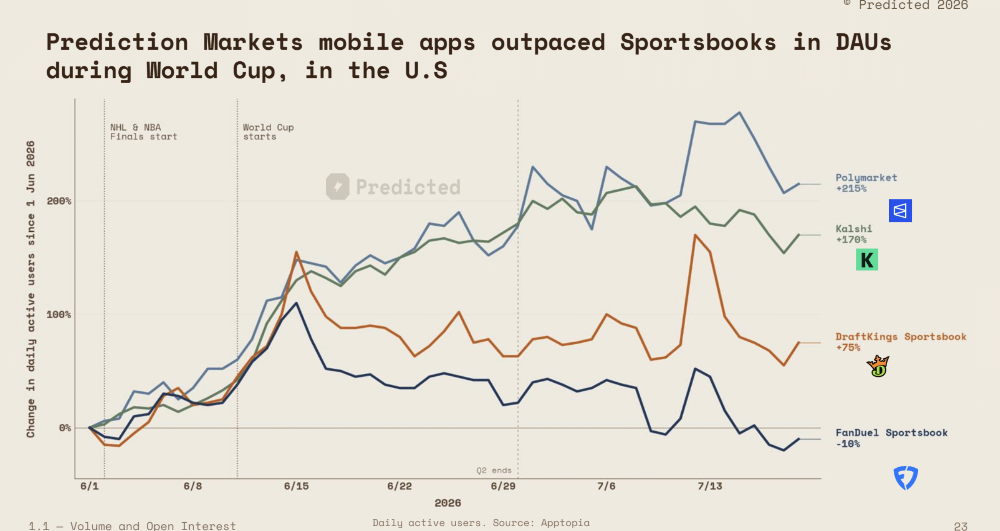
15Prediction Markets mobile apps outpaced Sportsbooks in DAUs during World Cup, in the U.S
DAU growth since 1 June 2026: Polymarket (+215%) and Kalshi (+170%) app usage outpaced DraftKings Sportsbook (+75%) and FanDuel Sportsbook (-10%) through the tournament. Source: Apptopia.
15-mobile-dau-vs-sportsbooks.png
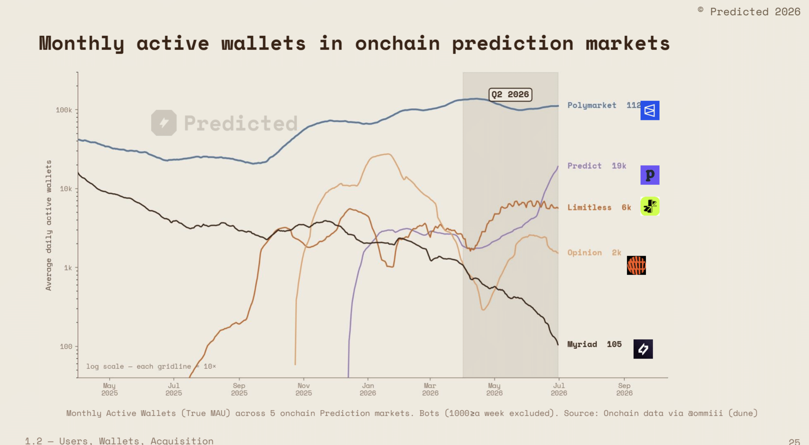
16Monthly active wallets in onchain prediction markets
Log-scale daily active wallets across 5 on-chain venues, May 2025–Sep 2026: Polymarket leads at 112k, with Predict (19k) and Limitless (6k) growing into Q2 while Myriad declined to 105. Source: Dune @ommiii.
16-onchain-monthly-active-wallets.png
17–23 · Revenue, fees & funding
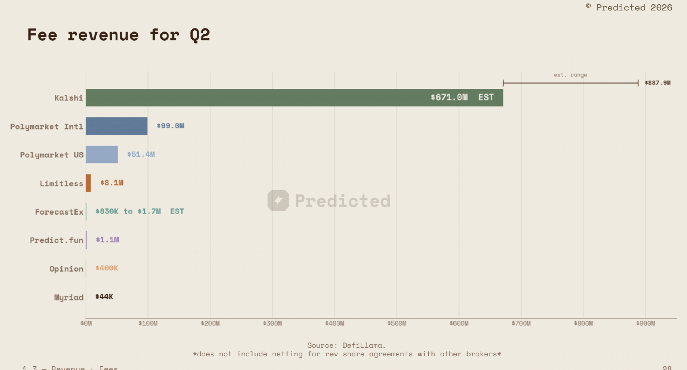
17Fee revenue for Q2
Q2 fee revenue by platform: Kalshi ~$671M (est. range up to $887.9M), Polymarket International $99.0M, Polymarket US $51.4M, with much smaller amounts for Limitless, ForecastEx, Predict.fun, Opinion and Myriad. Source: DefiLlama.
17-fee-revenue-by-platform.png
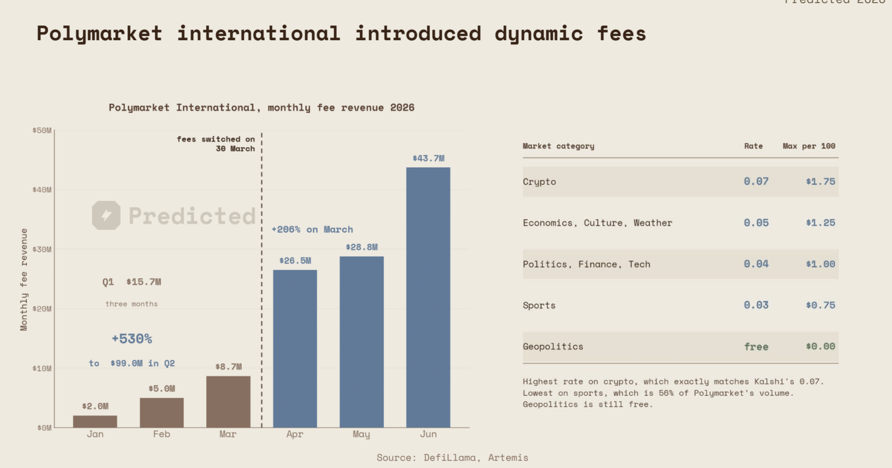
18Polymarket international introduced dynamic fees
Monthly fee revenue jumped from $15.7M (Q1) to $99.0M (Q2) after switching to category-based dynamic fees on 30 March, ranging from 0.07 (crypto, matching Kalshi) down to free (geopolitics). Source: DefiLlama, Artemis.
18-polymarket-dynamic-fees.png
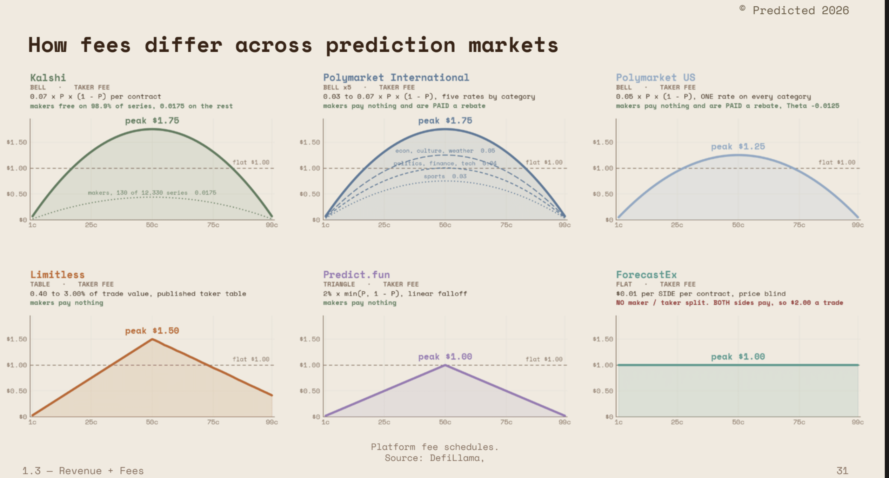
19How fees differ across prediction markets
Six fee-curve shapes across price (1¢–99¢) for Kalshi, Polymarket International, Polymarket US, Limitless, Predict.fun and ForecastEx — bell curves, a table, a triangle, and ForecastEx's unusual flat per-side fee.
19-fee-schedule-comparison.png
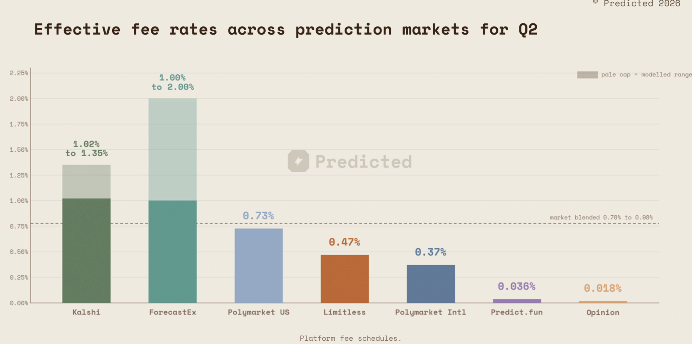
20Effective fee rates across prediction markets for Q2
Modelled effective take rate per platform: ForecastEx (up to 2.00%) and Kalshi (1.02–1.35%) charge well above the market-blended 0.78–0.98%, while Polymarket International (0.37%) and Opinion (0.018%) sit near the bottom.
20-effective-fee-rates.png
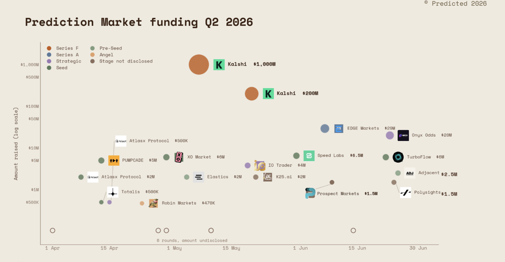
21Prediction Market funding Q2 2026
Scatter of every disclosed Q2 funding round by date and amount (log scale) — dominated by Kalshi's two raises ($1,000M, $200M) with a long tail of seed/pre-seed/angel rounds from EDGE Markets down to Robin Markets.
21-funding-rounds-scatter.png
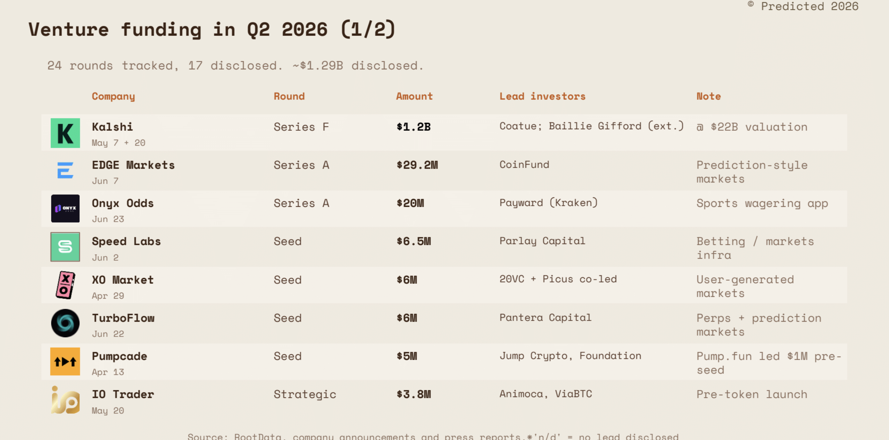
22Venture funding in Q2 2026 (1/2)
Table of the largest disclosed rounds: Kalshi's $1.2B Series F at a $22B valuation (Coatue, Baillie Gifford), plus EDGE Markets, Onyx Odds, Speed Labs, XO Market, TurboFlow, Pumpcade and IO Trader. 24 rounds tracked, ~$1.29B disclosed.
22-venture-funding-table-part1.png
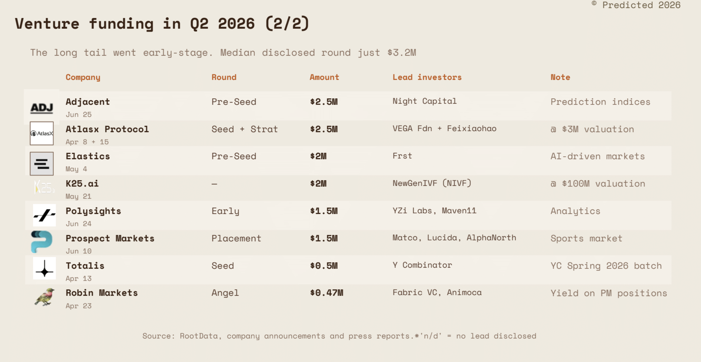
23Venture funding in Q2 2026 (2/2)
The long tail of early-stage rounds — Adjacent, Atlasx Protocol, Elastics, K25.ai, Polysights, Prospect Markets, Totalis (YC Spring 2026) and Robin Markets — with a median disclosed round of just $3.2M.
23-venture-funding-table-part2.png
24–25 · Valuations & new entrants
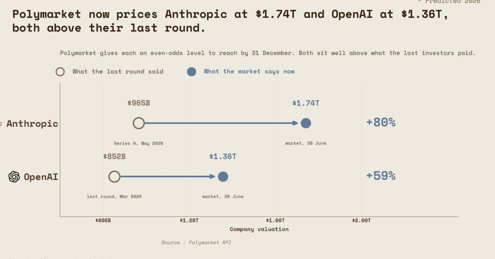
24Polymarket now prices Anthropic at $1.74T and OpenAI at $1.36T, both above their last round
Polymarket's implied valuations (30 June) versus each company's last priced round: Anthropic +80% (from $965B Series H) and OpenAI +59% (from $852B). Source: Polymarket API.
24-polymarket-ai-valuations.png
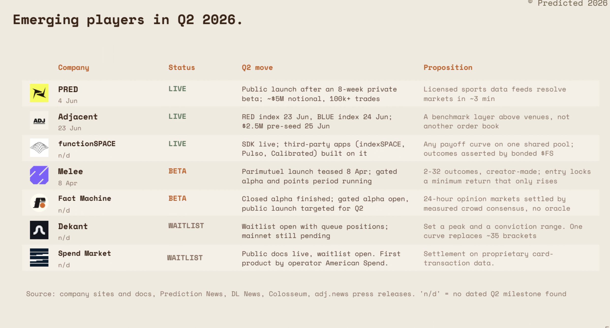
25Emerging players in Q2 2026
Status table for newer entrants: PRED and Adjacent went live in Q2; functionSPACE shipped an SDK; Melee and Fact Machine are in beta; Dekant and Spend Market remain waitlisted.
25-emerging-players-table.png
26–37 · Incumbents & giants
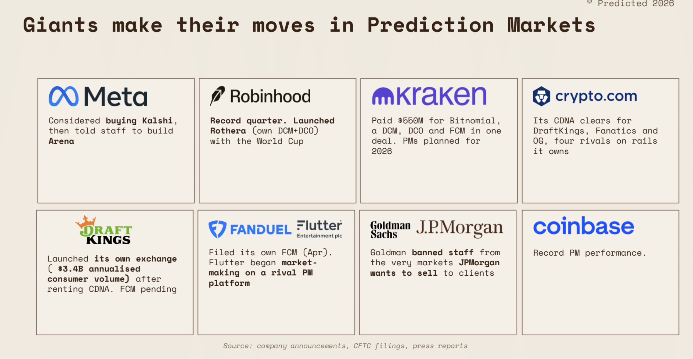
26Giants make their moves in Prediction Markets
Grid of moves by Meta (considered buying Kalshi, then built Arena internally), Robinhood (launched Rothera), Kraken ($550M Bitnomial deal), Crypto.com, DraftKings, FanDuel/Flutter, Goldman/JPMorgan and Coinbase.
26-giants-make-their-moves.png
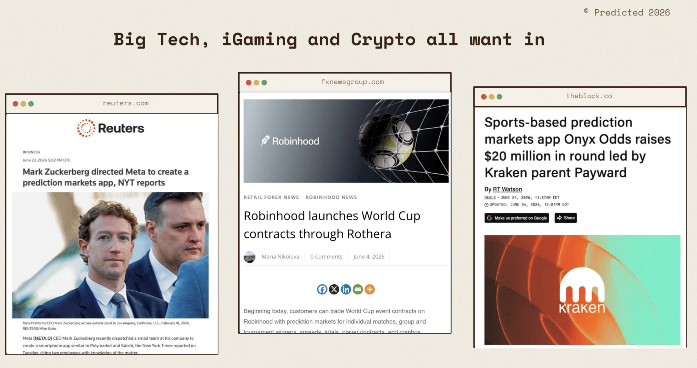
27Big Tech, iGaming and Crypto all want in
Three news clippings: Reuters on Zuckerberg directing Meta to build a prediction-markets app; Robinhood launching World Cup contracts via Rothera; Onyx Odds raising $20M led by Kraken parent Payward.
27-big-tech-igaming-crypto-headlines.png
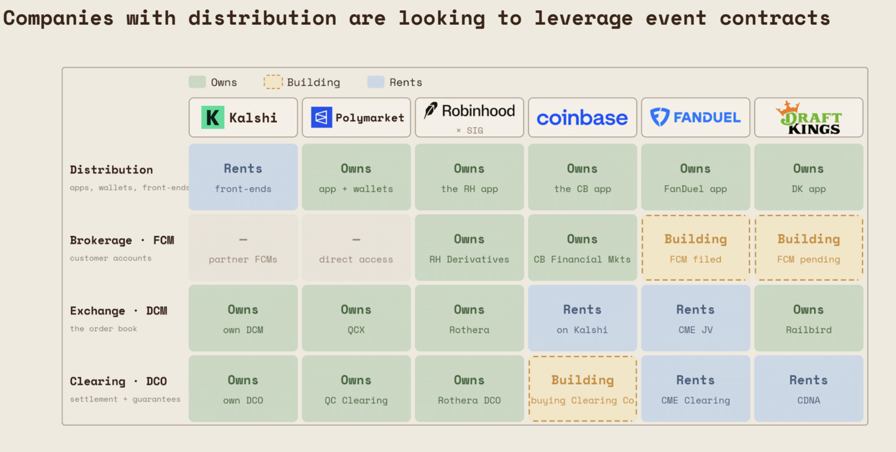
28Companies with distribution are looking to leverage event contracts
Owns/Building/Rents matrix across Kalshi, Polymarket, Robinhood, Coinbase, FanDuel and DraftKings for four layers: distribution, brokerage/FCM, exchange/DCM, and clearing/DCO.
Maps each brand/venue to who actually clears its trades — Kalshi Klear, QC Clearing, ForecastEx, Rothera, CDNA, CME Clearing, OCC, UDX, Bitnomial, The Clearing Company, DKeX and Ludlow Exchange. Source: CFTC filings.
29-clearing-map.png
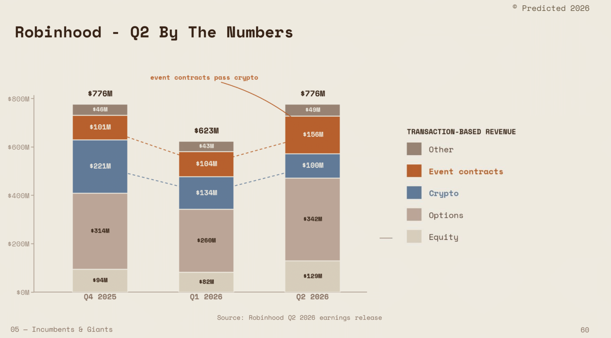
30Robinhood - Q2 By The Numbers
Robinhood's transaction-based revenue by quarter: event contracts ($156M) passed crypto ($100M) for the first time in Q2 2026, within $776M total transaction revenue. Source: Robinhood Q2 2026 earnings release.
30-robinhood-q2-revenue.png
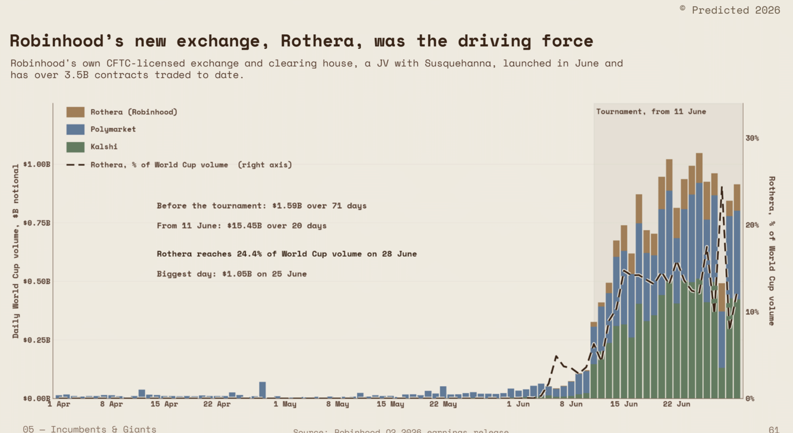
31Robinhood's new exchange, Rothera, was the driving force
Rothera (Robinhood's CFTC-licensed exchange/clearing house, a JV with Susquehanna) launched in June and reached 24.4% of World Cup volume on 28 June, with 3.5B+ contracts traded to date.
31-rothera-world-cup-driving-force.png
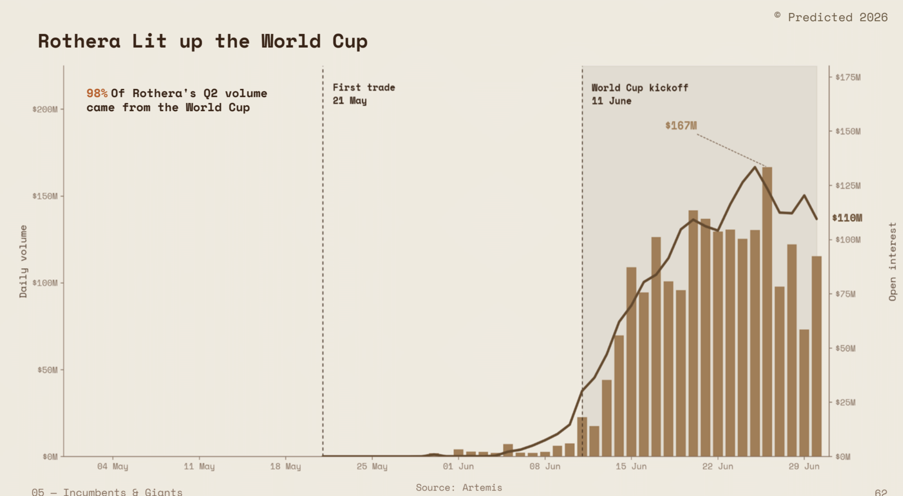
32Rothera Lit up the World Cup
98% of Rothera's entire Q2 volume came from the World Cup: daily volume and open interest climbed from first trade (21 May) to a peak $167M OI around the tournament.
32-rothera-daily-volume-world-cup.png
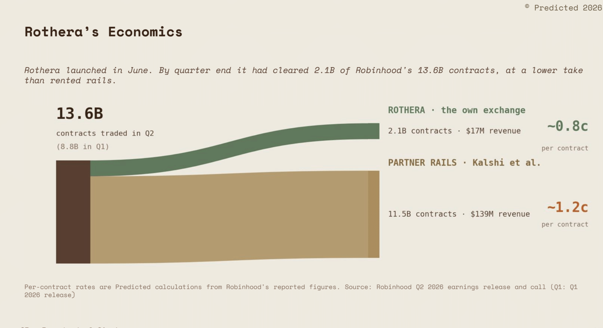
33Rothera's Economics
Sankey of Robinhood's 13.6B Q2 contracts: 2.1B cleared on Rothera (own exchange, ~0.8¢/contract) versus 11.5B on partner rails like Kalshi (~1.2¢/contract) — Rothera runs at a lower take.
33-rothera-economics-sankey.png
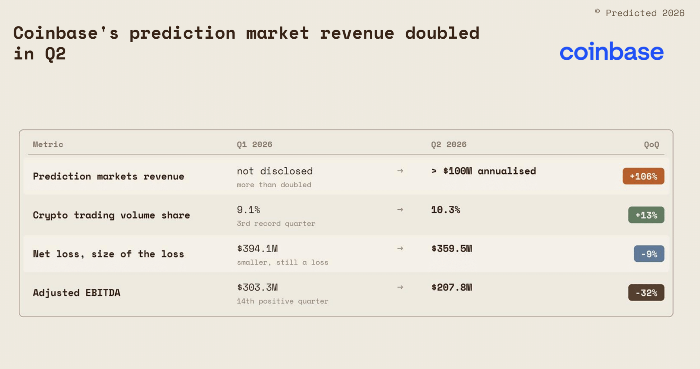
34Coinbase's prediction market revenue doubled in Q2
Coinbase's prediction-markets revenue run-rate passed $100M annualised (+106% QoQ) alongside record crypto trading share, a smaller net loss, and lower adjusted EBITDA.
34-coinbase-revenue-doubled.png
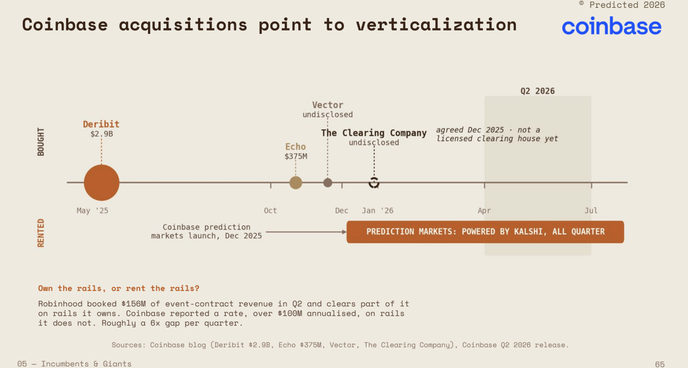
35Coinbase acquisitions point to verticalization
Timeline of Coinbase's Deribit ($2.9B), Echo ($375M), Vector and The Clearing Company deals against its "powered by Kalshi" rented rails — Robinhood earns ~6x more per quarter on rails it owns versus Coinbase on rails it rents.
35-coinbase-acquisitions-timeline.png
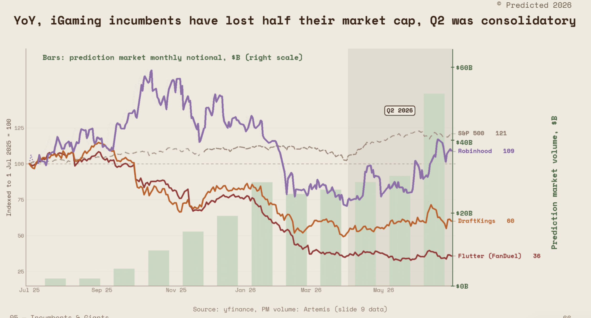
36YoY, iGaming incumbents have lost half their market cap, Q2 was consolidatory
Indexed stock performance (Jul 2025=100) for Robinhood, DraftKings and Flutter/FanDuel against the S&P 500 and prediction-market monthly notional volume — DraftKings and Flutter both down roughly 40-65% YoY.
36-igaming-stock-performance-yoy.png
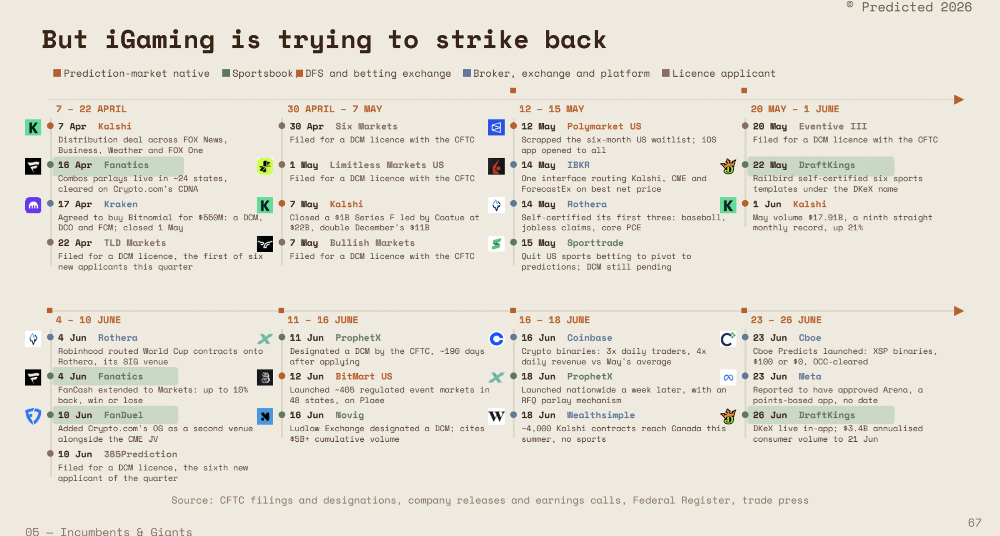
37But iGaming is trying to strike back
Dense two-row timeline (7 April–26 June) of DCM filings, launches and distribution deals from Kalshi, Fanatics, Kraken, Polymarket US, IBKR, Rothera, DraftKings, FanDuel, Coinbase, Cboe, Meta and more.
37-igaming-strikes-back-timeline.png
38–43 · Regulation & integrity
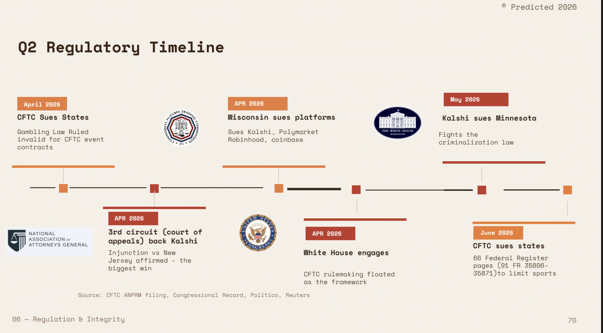
38Q2 Regulatory Timeline
Timeline of the quarter's regulatory turns: CFTC sues states after a court ruled gambling law invalid for its event contracts, Wisconsin sues platforms, the 3rd Circuit backs Kalshi, and Kalshi sues Minnesota over its criminalization law.
38-q2-regulatory-timeline.png
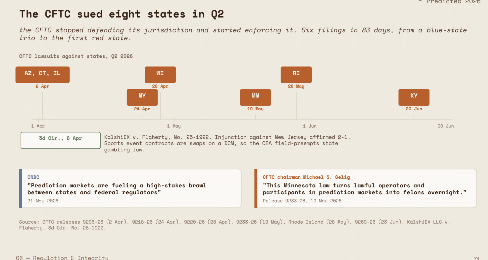
39The CFTC sued eight states in Q2
Six CFTC filings against states in 83 days (AZ/CT/IL, NY, WI, MN, RI, KY), alongside the 3rd Circuit's KalshiEX v. Flaherty ruling that sports event contracts are swaps on a DCM and field-preempt state gambling law.
39-cftc-sues-eight-states.png
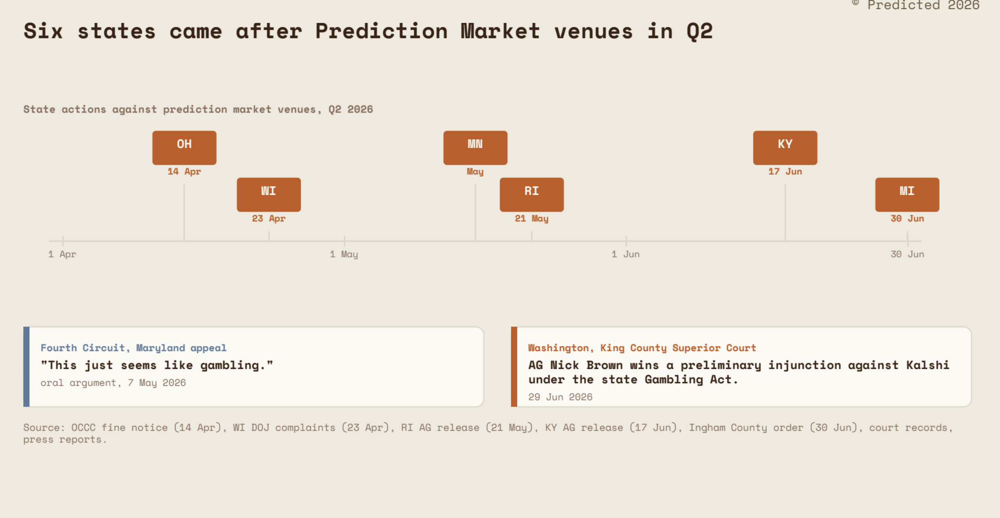
40Six states came after Prediction Market venues in Q2
The reverse direction: state actions against venues themselves (OH, WI, MN, RI, KY, MI), including Washington's King County court granting AG Nick Brown a preliminary injunction against Kalshi.
40-states-sue-prediction-market-venues.png
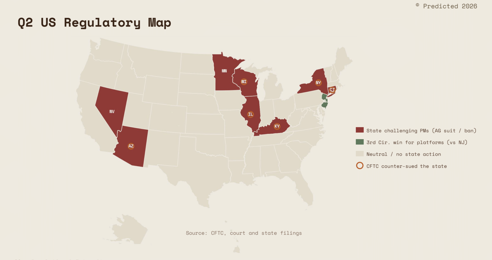
41Q2 US Regulatory Map
Choropleth of which states challenged prediction markets (NV, AZ, MN, WI, IL, KY, NY, CT) versus New Jersey, the lone 3rd Circuit win for platforms. Source: CFTC, court and state filings.
41-q2-us-regulatory-map.png
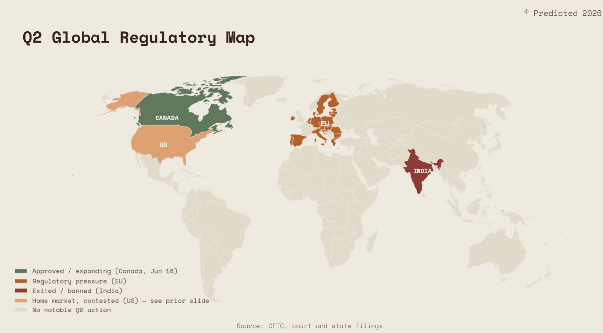
42Q2 Global Regulatory Map
World map of regulatory posture: Canada approved/expanding, the EU under regulatory pressure, India exited/banned, and the US a contested home market.
42-q2-global-regulatory-map.png
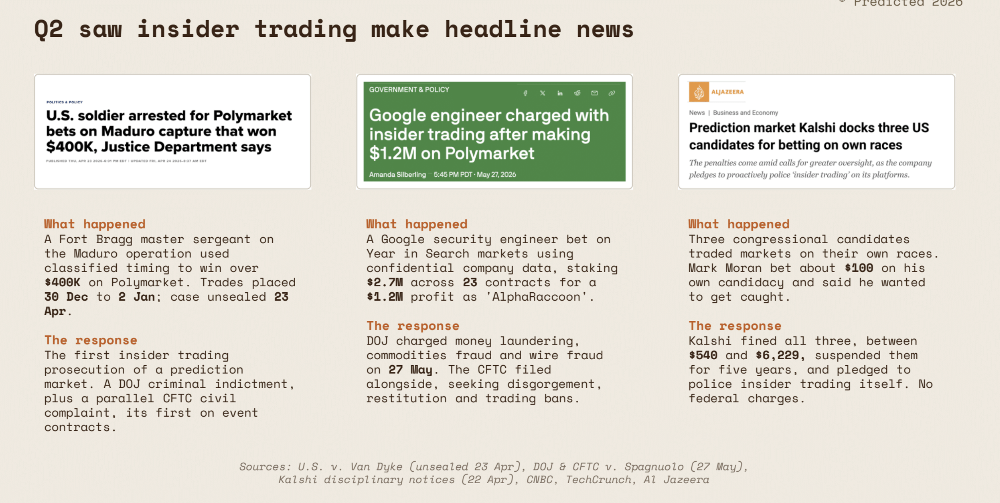
43Q2 saw insider trading make headline news
Three integrity cases: a Fort Bragg soldier's $400K Maduro-capture bet led to the first insider-trading prosecution of a prediction market; a Google engineer charged after making $1.2M on Polymarket; Kalshi fined three congressional candidates for betting on their own races.